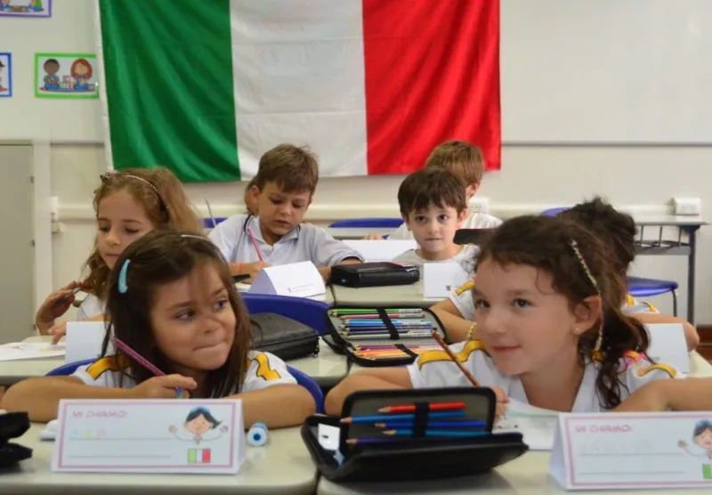

Introdução
Cultura da Itália
A cultura italiana é conhecida por muitos aspectos, incluindo a arte, a gastronomia, a moda, a arquitetura e o design. A Itália é considerada o berço da civilização ocidental e uma surpepotência cultural.
A Itália é famosa pela sua arte e monumentos, como a Torre de Pisa e o Coliseu de Roma. O país também é conhecido pela sua comida, como pizza, pasta, frutos do mar, azeite e vinho. A Itália também tem uma forte produção de moda, com muitas marcas famosas de roupas e joias.
A Itália também é conhecida pela sua religião, o catolicismo, e a sede da igreja católica está na Cidade do Vaticano, em Roma. O país também é muito festivo, com diversas festividades, como o carnaval e a Festa da Befana (Epifania ou Dia de Reis).
Os italianos também são conhecidos por serem um povo muito festivo, que adora boas conversas, um cafezinho, e que se orgulha da cultura local. Eles também priorizam tempo de qualidade em família e adoram uma passeggiata noturna.
Certamente, o país é conhecido também por sua religião, o catolicismo. Bem como a sede da igreja católica é na Cidade do Vaticano, em Roma. Ali reside o Papa, e onde todas as decisões são tomadas.